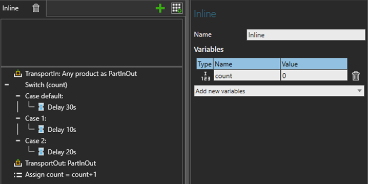
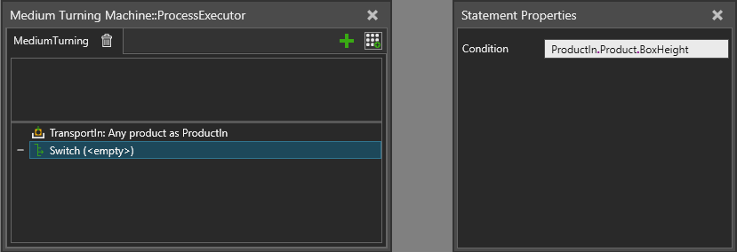
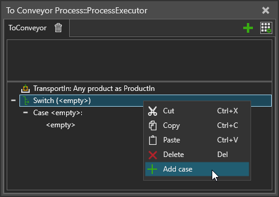
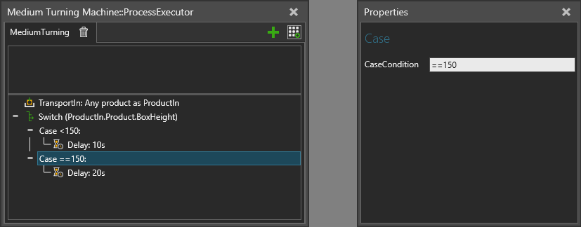
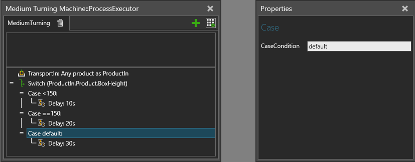

A SwitchCase statement allows you to execute one of the predefined case scopes, based on evaluated value of the Condition expression. Each case scope defines a test for the condition value, and the first case where the test is passed, i.e. evaluates to True, gets executed.
The default case scope is executed if no other case test passes.
Process variables are often used in switch case expressions.
To define a new static variable, select a process routine. In Routine Properties, click Add new variables drop-down menu, and then select the type. New variable appears in panel, which name and value can be edited. Change only the name and use Assign statement to define its value.

Select the switch case statement and define Condition expression. The calculated value of the expression is compared against case conditions. Both static and runtime variables can be used in the expression.

To add a new case, point to switch statement in a process routine, then right-click and select Add case.

Select a case and define the CaseCondition property value. It is a string property that is parsed into a comparison operator and the actual value expression.
The syntax is
| <operator> <actual_value_expression> |
If the operator is omitted, the equals operator (==) is used.
An expression can have multiple operators and variables. See operator precedence.
The actual value expression can be either a constant value or an expression consisting of variables.

One of the cases may be specified as the default case, which will be executed if no other case condition is accepted. This is done by typing "Default" into the case condition (not case sensitive).

| Name | Description |
| Condition | Defines a comparison expression to evaluate each case against. See also Process Statement Expressions. |
CaseCondition |
Defines a comparison expression to evaluate against the Condition. |